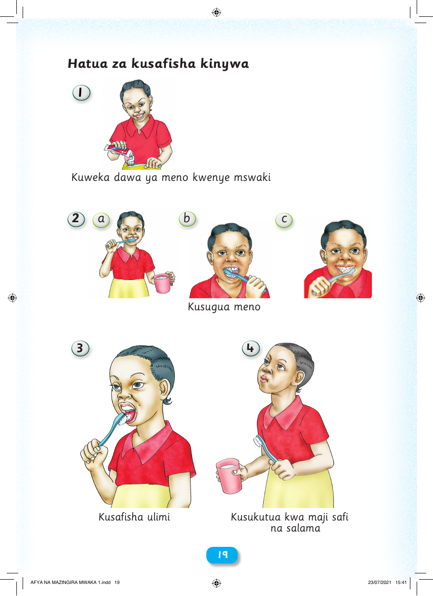

 19 19 3 4 Kusafisha ulimi Kusukutua kwa maji safi na salama Hatua za kusafisha kinywa 1 Kuweka dawa ya meno kwenye mswaki 2 a b c Kusugua meno AFYA NA MAZINGIRA MWAKA 1.indd 19 23/07/2021 15:41 H a t u a z a kus a fisha kinywa 1 Kuweka dawa ya meno kwenye mswaki 2 a b c Kusugua meno 3 4 Kusafisha ulimi Kusukutua kwa maji safi na salama 1199 AFYA NA MAZINGIRA MWAKA 1.indd 19 23/07/2021 15:41